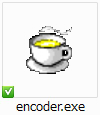

exeバージョンエンコーダー

HTMLバージョンエンコーダー
テキストに書いたスクリプトは、『エンコード』をしてはじめて完成します。
エンコードとは、書いたスクリプトをうぇぶメイカーで使えるテキストの形に整えることです。
|  exeバージョンエンコーダー |
HTMLバージョンエンコーダー |
■exeバージョンエンコーダーの説明
１．index.htmlがある場所に『encoder.exe』があります。これを起動してください。
２．起動後、あなたが書いたスクリプトを開いてください。（※もしものことがありますので、バックアップを忘れずに！）
３．すぐに保存画面が現れます。
４．『story.js』に上書きして保存してください。
５．完成！
■HTMLバージョンエンコーダーの説明
０．パソコン上（ローカル）で変換を行うとき、InternetExplorerを使うと以下のようなボックスが現れます。
ブロックされたコンテンツを許可してください。
FirefoxやGoogle Chromeをお使いの場合はでてきません。

１．上のテキストエリアに、あなたの書いたシナリオを貼り付けてください。

２．変換ボタンを押してください。

４．ダイアログがでますので、ＯＫを押してください。

５．変換結果が表示されますので、それを全てコピーしてください。

６．メモ帳か何かでファイルを作って、それに５．でコピーした変換結果を貼り付けてください。（または直接story.jsの中身に貼り付けてください）

７．ファイル名を「story.js」に変更してください。

８．index.htmlと同じ場所にstory.jsをおいて完成です。
雑談 エンコーダーで何を処理しているかを書いておきます。 エンコーダーでは、書いたスクリプトをfile_dataという配列変数に代入しています。 簡単に言うと、最初の行にvar file_data=new Array(を追加して、全ての行の最初と最後を''でくくっているだけです（笑） javascriptを知っている人はstory.jsを見るのが手っ取り早いかと思います。 story.jsはindex.htmlで読み込んでいます。 ここのstory.js部分を変更すれば別の名前などに設定できます。